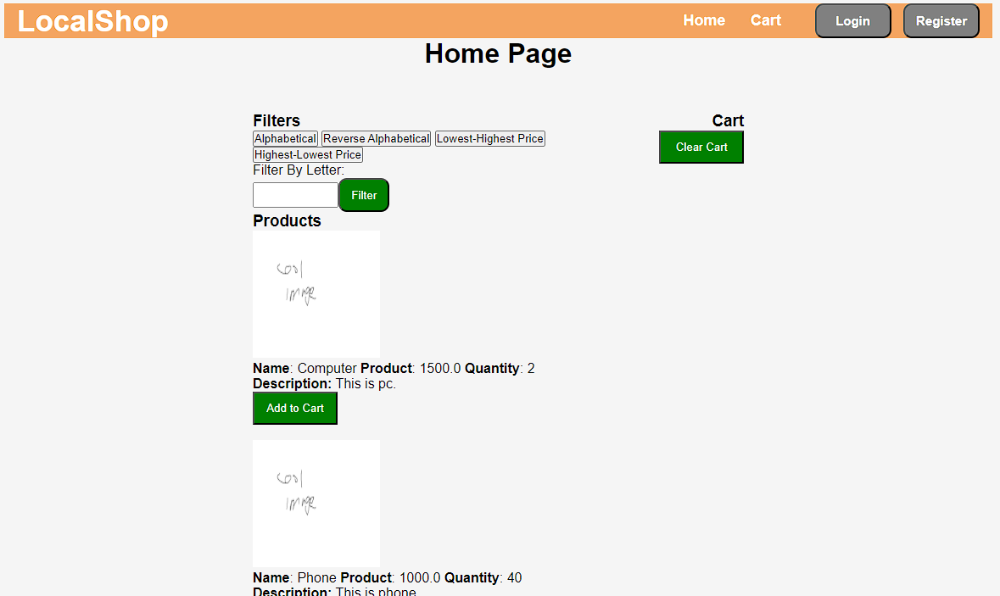
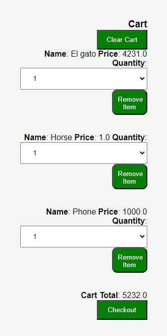
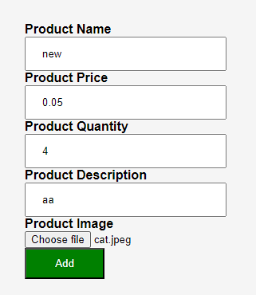
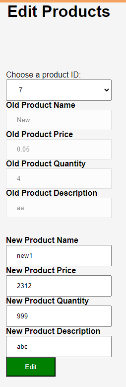
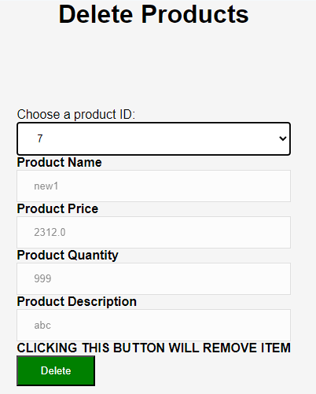
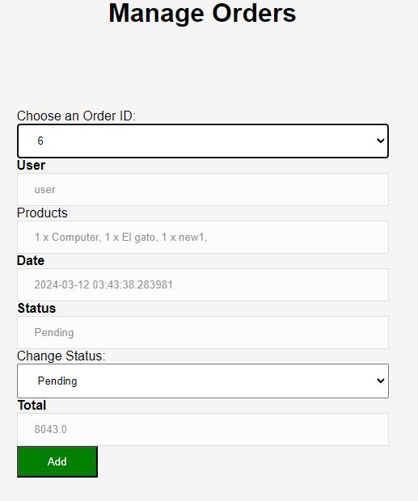

This project was developed in a group of 3 for an ISYS2160 assignment. The site is basic as we were not experience with web development.
It was written in Python using the Flask framework and SQLite was used for the database.
This site has a homepage and cart features which allow the user to store items and checkout. There is a user role, for purchasing items, and admin role
for managing items and orders. The admin is able to add products, edit products, delete products and manage orders.
I was responsible for setting up the backend, developing the login/register pages, admin pages and helping with other parts of the site such as the home page and cart.
For the backend, Flask was chosen because it is a simple framework that the group has used in a previous unit.
SQLite was chosen for the database because it is also easy to use. Rather than needing a server, the data is stored in RAM, so setting up was very simple.
The database has 3 tables, one for user, orders and products. Users have a unique id and the orders table has a foreign key which points to it.
This it to link the order to the user. The order table could've been improved as the items are just stored as a string.
I made this choice to make displaying the order easier, it could be improved by having a separate column for quantity and a foreign key pointing to the product_id.
Images of the site:
The homepage is implemented by querying the DB and getting all the products. Then it displays using a loop to display them.

The cart feature is implemented by using URL parameters to redirect and edit a dictionary.
In the cart you are able to select quantity from a drop menu or remove the item entirely from the cart.
Uses a for loop to get items and display them.

The add projects page enables the admin add new items, by reading the inputs and adding to DB.

The admin can also edit products by selecting the id from a dropdown menu. It displays the Old (current) details and allows the admin to change them.
Gets inputs and edits DB.

Deleting items can be done by selecting the item id. Gets inputs and removes row from product table.

The admin can edit the order status. (The Assigment specs were unclear about how much the admin should be able to modify).
Gets row with id selected and removes from DB.

Go To Code